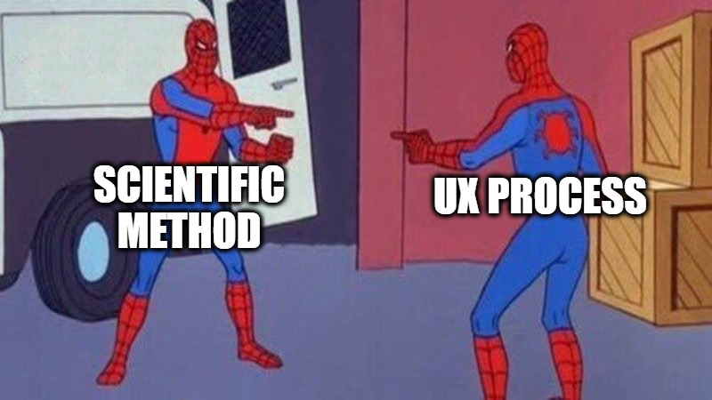

About Thanvin
Thanks for dropping by! I recently led the end-to-end UX development of a web service at Abode Atlas, a B2M data-tech startup and second-round funding recipient
of CMHC's Housing Supply Challenge. Prior to this project, I freelanced for three years
as a Medical Media Designer for med-tech companies like Perimeter Medical Imaging and Hologic, where my
visuals were key in advancing their surgical suite products to market.
Through UX, I enjoy the satisfaction that comes with seeing the lasting impact of a positive user experience.
I also value working in an interdisciplinary environment, where I'm continuously learning from the expertise
and skills of fellow team members.
For more on my UX journey and past experience, continue on. Aside from work, I love:
🔍 Exploring the city and hiking
📷 Photography @tgexplores
🏎 Watching Formula 1 (watch Netflix's Drive To Survive)
🏐 Playing volleyball, tennis, and keeping active
My journey to UX
Kickstarted my creativity
Found my knack and love for design through CyberARTS, a secondary school arts-tech program that fosters budding creatives.
Explored my passion for science
Graduated from the University of Toronto in 2016, honing skills in gathering and analyzing data, forming hypotheses, and testing. Wait a second...
Integrated science and design
Worked with Perimeter Medical Imaging and Hologic, producing animations and diagrams integral to their products’ success.
"Thoroughly enjoyed working with Thanvin on several projects. His professionalism and skill sets are
first class. Always available and open to feedback and interacts very well with the entire project group. His
ability to get it right the first time has great impact on project timelines and demonstrates that he pays close
attention to your needs."
Andrew Berkeley, Co-founder
Perimeter Medical Imaging, Toronto, ON
"Thanvin worked with us on medical animations for a specimen micro-CT system. He has excellent graphical and animation skills and delivered the content in a prompt manner. Even though we worked remotely he was able to understand our requirements and deliver a quality result."
Ciaran Purdy, R&D Director
Hologic, Tucson, AZ
Branched into UX
With much of my work sharing parallels with UX design, I leveraged my experience to branch out in 2020.
I joined Abode Atlas on a six-month contract to lead the UX development of their web service from the ground up.
For a deeper dive into the challenges and successes on my journey to UX,
read this piece.
"Having worked with Thanvin before, I was confident in his ability to lead the UX for our project. He quickly grasped housing sector concepts, mapped out next steps, and carried out project milestones with ease. Aside from his excellence as a UX designer, I valued his empathetic nature during engagement sessions, and in lending a hand to any teammate who needed it. Thanvin will continue to truly be an asset to any team he joins."
Jing Guo, Project Lead
Abode Atlas Technologies, Toronto, ON